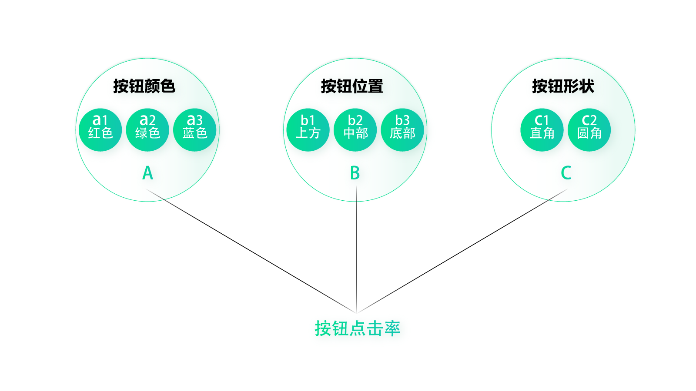
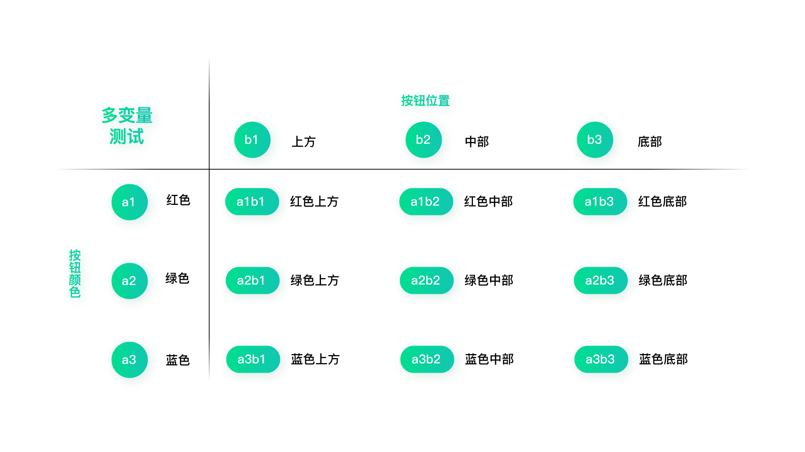
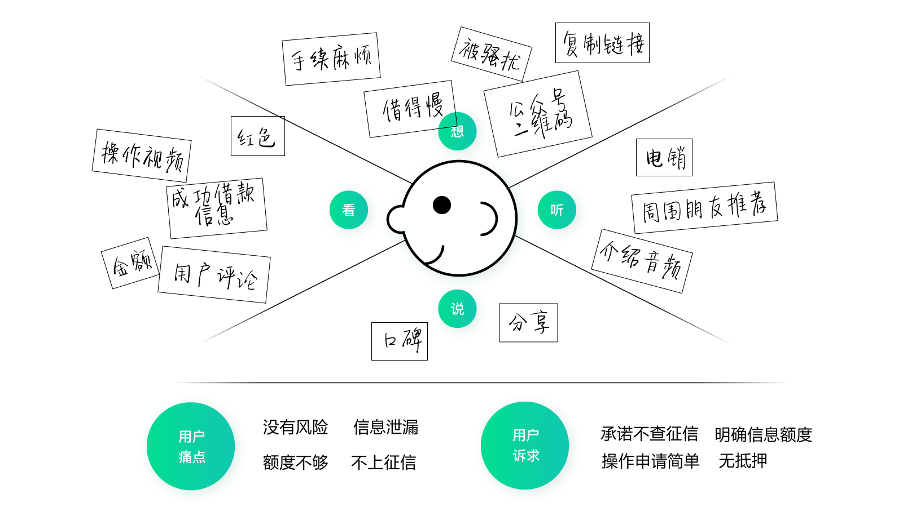
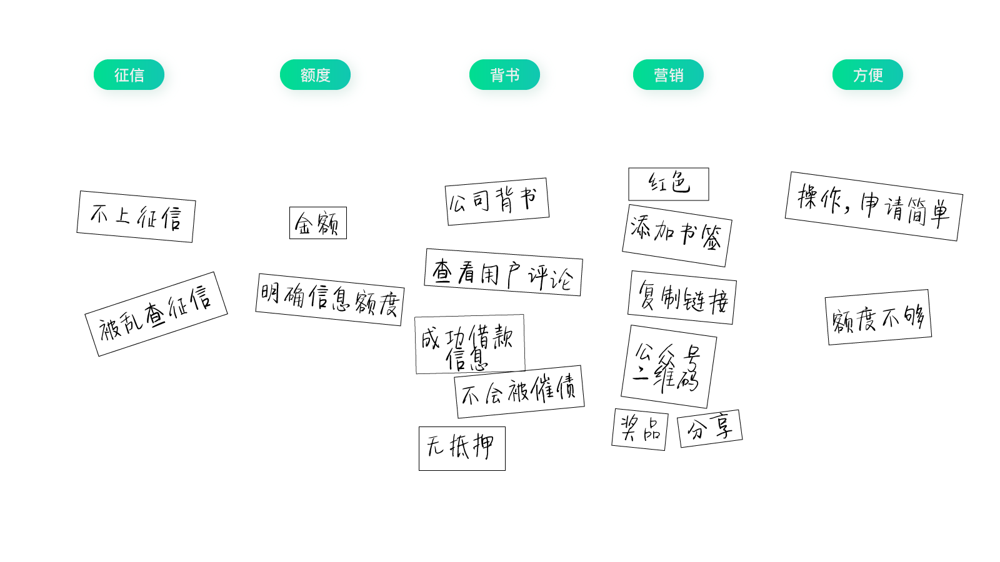
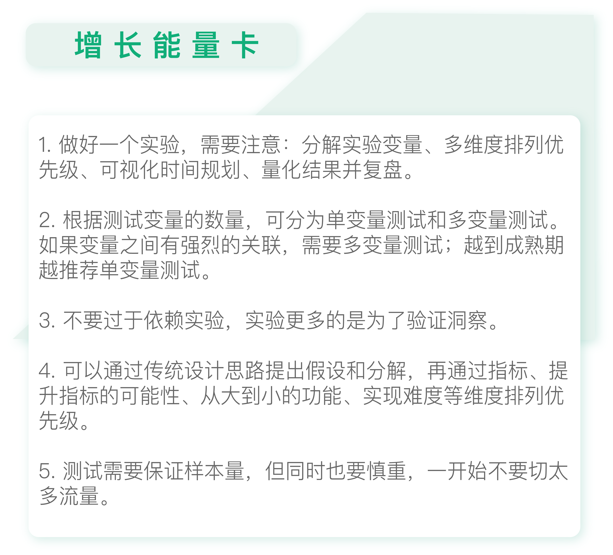

- 00 开篇词 人人都是增长官.md
- 01 预习 增长小白如何“弯道超车”？.md
- 02 预习 如何理解“增长”？.md
- 03 预习 不同职能如何做好增长？.md
- 04 预习 做增长如何处理职能间的矛盾？.md
- 05 正确目标找不对，天天加班也枉然.md
- 06 活学活用北极星指标.md
- 07 OKR如何助力增长？.md
- 08 不懂用户调研？那就对了！.md
- 09 调研目标：在差异性洞察中找到爆破点.md
- 10 数据分析：在“花式对比”中发现玄机.md
- 11 用户分类：围绕北极星指标细分人群.md
- 12 用户访谈：像侦探一样寻找破案线索（上）.md
- 13 用户访谈：像侦探一样寻找破案线索（下）.md
- 14 提炼用户差异，发现增长契机.md
- 15 挖掘产品优势，打破增长瓶颈.md
- 16 定位营销差异，抢占用户心智.md
- 17 一级方向：找到增长爆破点.md
- 18 B端产品如何调研？.md
- 19 全局规划增长机会.md
- 20 统筹全局的用户增长地图.md
- 21 案例解析：定义关键增长指标.md
- 22 正负双向洞察，找准切入点.md
- 23 二级机会：制定增长策略.md
- 24 为一家濒临破产的公司制定增长策略（上）.md
- 25 为一家濒临破产的公司制定增长策略（中）.md
- 26 为一家濒临破产的公司制定增长策略（下）.md
- 27 为什么指标数据怎么优化都不提升？.md
- 28 案例解析：打造增长闭环（上）.md
- 29 案例解析：打造增长闭环（下）.md
- 30 案例解析：唤醒沉睡用户（上）.md
- 31 案例解析：唤醒沉睡用户（下）.md
- 32 没有分解，就无缘增长.md
- 33 四个要点颠覆传统需求文档.md
- 34 三级落地：无限场景应用.md
- 35 手把手教你设计一次成功的实验（上）.md
- 36 手把手教你设计一次成功的实验（下）.md
- 37 积少可成多，别针换别墅.md
- 38 四级延续：增长组件库案例.md
- 39 以用户为中心增长.md
- 增长导航图 增长专栏的知识架构是怎样的？.md
- 尾声 结束意味着新的开始.md
- 预习答疑 你需要一张思维导图吗？.md
35 手把手教你设计一次成功的实验（上）
你好，我是刘津。
今天我们进入了第五个模块：小小实验让增长稳稳落地。
这一讲我们来学习如何设计并执行一次成功的实验，由于内容较多，会分为上下两讲。
想做好一个实验，需要注意以下几点，分别是分解实验变量、多维度排列优先级、可视化时间安排、量化结果并复盘。为什么这几点这么重要呢？我想通过一个“题外”的故事来为你解释。
今天我看到了一篇文章，讲的是一个曾经很普通的女生如何通过正确的方法，用短短一个假期的时间从班里的“差生”逆袭成优等生，并陆续考上了清华、哈佛的故事。带着满满的好奇心，我阅读完了她的学习方法。
读完之后，我发现其实她的方法和精益闭环如出一辙：先定大目标，然后把目标分解成一个个关键事项，结合时间轴（相当于优先级）列出完整计划，再把计划贴在家里明显的位置提醒自己。就这样，仅仅经过一个暑假，她就脱胎换骨，成绩由原来的中下游变成了前几名。大家都对她的变化感到十分震惊。
她是这样解释的：成功不仅需要清晰的目标，还要把目标化成一个个可量化、可实现的阶段性“待办事项”。不仅知道要什么，还要知道怎么做，时刻关注自己的表现，时刻看到自己的进步，自然就不再迷茫。
另外，通过可视化的方式把时间规划和待办事项结合到一起，让自己既有清晰的目标和具体事项安排，又有明确的时间。
最后，把这些内容写在卧室的白板上，抬头就能看到；或者设成手机屏保，每次用手机都能看到。这是源自心理学上的“曝光效应”。也就是多看目标，多提醒自己目标的存在，越看就越想实现，不断刺激我们的情绪和斗志。
这个思路让我感触很深，最初我们的用户增长设计团队也只是一个非常普通的支持团队，工作质量一般、效率也不高。但是使用精益闭环的思路后，我们用很短的时间就创造了一个又一个奇迹，让领导刮目相看，与此同时我们也没有增加很多额外的工作量。
也许你的工作一开始就顺风顺水，这时你很可能不会去思考什么问题，只以为一切都是天时地利人和。但当你开始遇到问题、解决问题，并回头分析自己的行为时，你才有可能明白：好的方法真的是可以让普通人快速逆袭的。
下面我就逐一介绍一下实验的要点。
分解实验变量
首先是分解实验变量，这个在前面已经讲了不少了。常见的有单变量测试和多变量测试。
单变量测试的应用很好理解，比如说我们这次单独测试按钮颜色，其他的都不改变。那么按钮颜色就是单独的测试变量。即便你要测无数种颜色，这也是一个单变量测试。
多变量测试就是同时测试多种变量，像我在第31讲里提到的“唤醒沉睡用户”的案例，就是多变量测试。
如果还拿优化按钮样式来举例，那么通过分解，你可以考虑优化按钮颜色、位置、形状。如果优化其中一种，就是单变量测试；如果同时优化两种或三种，就是多变量测试。

在每个变量下面，我们还需要再细分测试变量。比如按钮颜色，可以分解出a1红色；a2绿色；a3蓝色……按钮位置，可以分解出b1上方；b2中部；b3底部……按钮形状，可以分解出c1直角；c2圆角……
假如我们同时选择按钮颜色和位置这两个变量做测试，那么就需要交叉所有的小变量组合，其中有：a1b1；a1b2；a1b3；a2b1；a2b2；a2b3；a3b1；a3b2；a3b3。一共9种组合。

当然这里只是个示例，给你展示如何分解变量做测试。但如果真的是优化界面，我是不建议用这种机械的方式来测试的。很多公司或个人太过推崇实验文化，而越来越不愿意动脑去思考。实际上，实验只能从已知的组合中挑出最好的，却不能帮助我们探索未知。所以，我们还是尽量要用洞察+验证的方式来做增长。
还记得我在第28讲举过的营销落地页的例子吗？当时只是讲了最基础的设计思路，优化了界面风格及内容。后来我们一直在持续优化，提出了更多的假设并进行分解。我想这也是很多人关心的问题：如何能源源不断地提出假设和分解？我们是怎么做的呢？
首先，我们进行了一轮头脑风暴，模拟用户看到这个页面的场景（前提是我们之前已经做了深入的用户调研），思考他希望看到什么、他想到了什么、希望听到什么、可能会说些什么……然后提炼出用户痛点和用户诉求。

接下来我们把用户诉求提炼成几个典型的分类，这些分类就是三级假设；再把其它内容分别摆放进对应的分类位置里，这些内容就是每个假设下面分解出来的具体事项。

如果是传统的设计思路，可能会根据实现难度排列优先级，然后全部优化后进行开发。但在这里，我们需要先经历一轮又一轮的筛选机制。
多维度排列优先级
首先，是看指标，即这些内容是否可以提升指标；如果比较确定，则保留进测试计划；如果认为不能（比如根据过往实验经验）则删除。
其次，是看提升指标的可能性，可能性越大的排在前面，可能性小的排在后面。
再次，是秉持“从大到小”的思路，先做大优化，再做小细节优化。
最后，是看实现难度。对于H5页面来说，这项几乎可以忽略不计。
按照这几个维度去筛选并排列优先级，并标出序号，比如a1、a2、a3……b1、b2、b3……
当然对于大神来说，也许并不需要这么麻烦，他可以很快地根据前期洞察想到提升指标的假设。但如果是一群普通人打增长持久战，那就需要这种成体系的方法了。
结合这个案例，我们可以使用单变量测试的方式，这样有助于我们了解到底什么情况下能够提升指标，什么情况下不能。比如a1代表“查看用户评论”，那就可以做个AB测试，A版本可查看用户评论，B版本保持不变。这样我们就可以明确“查看用户评论”的功能是否能够提升转化。
这引出了两个新的问题：一个问题是做AB测试应该切多少量；另一个问题是什么情况下用单变量测试，什么情况下用多变量测试。
为了谨慎，一般我们不会五五分做AB测试，而是切出一个较小的渠道，或较小的量级来进行测试，如果实验效果不错再切出更多的流量测试。比如，可以先保持90%的流量不变，剩下的10%流量里各切5%进行AB测试。当然也得看总量，一般来说AB测试要保证每个样本量上千。如果想要更严谨的话，可以进行置信区间的计算，这个我们在下一讲会具体介绍。
至于什么情况用单变量测试，什么情况用多变量测试，我认为也是要综合来看。如果变量之间有强烈的关联，那么就需要多变量测试。比如唤醒沉睡用户的案例，对什么样的人在什么样的时间用什么样的方式去唤醒，很明显这些大变量之间有极强的关联性，是无法独立测试的。另外就是看产品发展阶段，越到成熟期越推荐单变量测试，因为我们需要精细化的考量独立因素对最终指标的影响。

思考题
你可以尝试做一个实验计划，分解出待测试的事项并排列优先级。
欢迎把你的思考和疑问通过留言分享出来，与我和其他同学一起讨论。如果你觉得有所收获，也欢迎把文章分享给你的朋友。
© 2019 - 2023 Liangliang Lee. Powered by gin and hexo-theme-book.